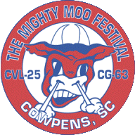

<div id="mainPage" class="mainPage">
<div class="contentText">
	
	<div class="text-grey" style="font-weight: bold">
		The Mighty Moo now has a BBQ Cookoff! Please visit our <a href="#" class="majorLinks" style="left: 0px" onclick=loadSponsors("Forms")>Forms Page</a> for more details and a signup sheet.
	</div>
	<div class="text-grey" style="font-weight: bold">
		To sign up to participate in the various facets of the Mighty Moo Festival, please visit our <a href="#" class="majorLinks" style="left: 0px" onclick=loadSponsors("Forms")>Forms Page</a>! 
	</div>
	<div class="text-grey" style="font-weight: bold">
		Check out a video of the 2010 Mighty Moo, produced by the US Navy's All Hands Television, <a target="_blank" href="http://www.navy.mil/swf/mmu/mmplyr.asp?id=14648">here</a>
	</div>
	<span class="text-grey">
<p>In July 1977, former USS Cowpens Crewman, Mr. O.J. Simpson, surprised the townspeople by attending the town's first "Mighty Moo Day" festival.  The festival to honor the USS Cowpens Crewman was an idea that arose from the town's successful Bicentennial Celebration the previous year and had been advertised in a Navy magazine.  About 1500 visitors turned out for the rides, flea market, and Colonial experiences of that first festival.</p>
<p>By 1981, with the help of crewmen Gerald Shaw, Nick Verlinick, and Dr. Herbert Noland, the reunion had grown to include ten crewmen and their wives. The reunion included a reception at the Town Hall and dinner at the Wagon Wheel Fish Camp. Before leaving, the crewmen donated money to the town to be used in restoring the old train depot.  In 1982, the depot was moved to its current location, where the restored building holds a civic center and museum comprised of memorabilia donated by USS Cowpens crewmen.  The crewmen also agreed to establish the third weekend in June as the date of the annual reunion in Cowpens.</p>
<p>When Chief Petty Officer Paul Smith was selected to attend the Mighty Moo Festival while stationed aboard the USS Cowpens CG-63 a few years ago, he "thought it was an awesome thing that the town of Cowpens put together a festival supporting both CVL-25 and CG-63." Smith says that after 16 years with the Navy, he's never heard of any festival similar to the one hosted by the Town of Cowpens.  The people of Cowpens seemed "friendly and warm," says Smith, who echoes the town's sentiments when he wishes the time together could last more than a day. 
</p>
<p>Today, the festival is a four-day event that boasts street dances, a golf tournament, beauty pageant, a baseball game, an arts and crafts sale, and a parade. The festival is a time for the townspeople to celebrate their history and to honor the veterans and crewmen of the USS Cowpens CVL 25 and the USS Cowpens CG63.  Mr. Carswell Wynne, a veteran of the USS Cowpens CVL 25 and regular attendee of the Mighty Moo Festival says, "Words can't explain the joy we have when coming to The Mighty Moo Festival, The Battle Ground and being with our families that have adopted us."</p>
<p style="text-decoration: underline">Source:</p>
<p>"'Mighty Moo' Day." History of Cowpens, South Carolina. Ed. Linda Dearybury Taylor.  Inter-Collegiate Press, 1982. 140-143.</p>
<p>Smith, Paul.  Personal Interview.  16 February 2010. </p>
<p>Wynne, Carswell. Personal Interview.  10 February 2010. </p>
</span>
	</div>
</div>
